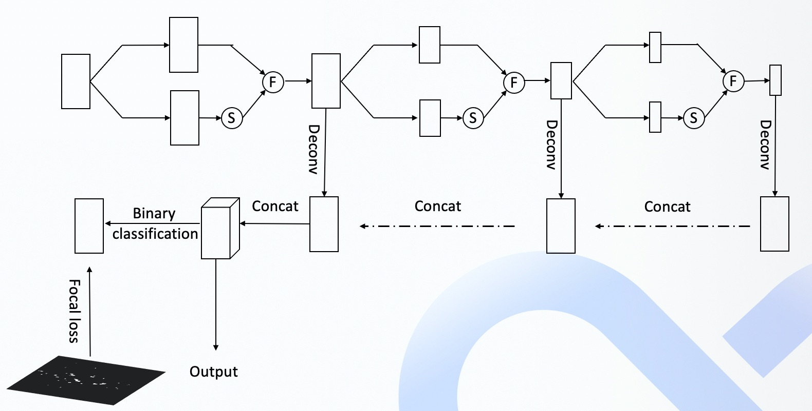
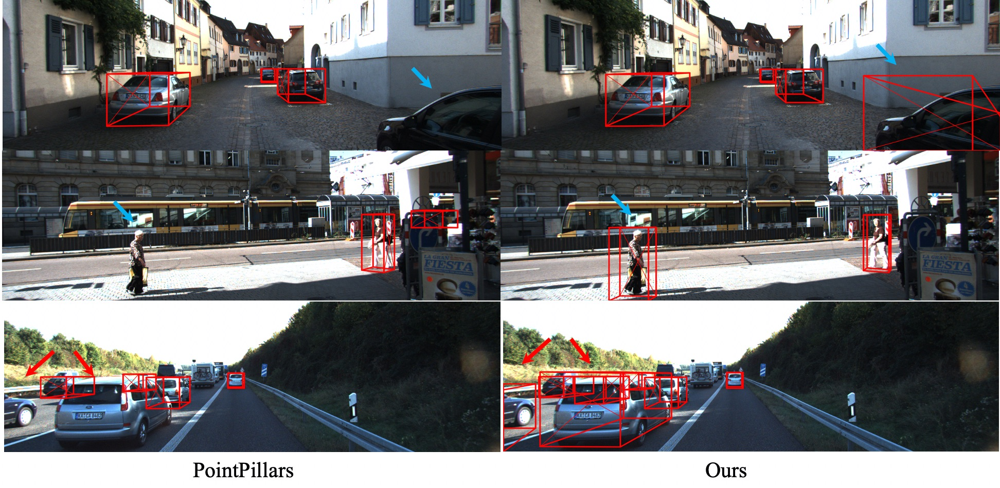

<!DOCTYPE html>

<html lang="zh_CN">
  <head>
    <meta charset="utf-8" />
    <meta name="viewport" content="width=device-width, initial-scale=1.0" /><meta name="generator" content="Docutils 0.17.1: http://docutils.sourceforge.net/" />

    <title>激光雷达感知 &#8212; Sphinx documentation</title>
    <link rel="stylesheet" type="text/css" href="../../../_static/pygments.css" />
    <link rel="stylesheet" type="text/css" href="../../../_static/sphinx13.css" />
    <link rel="stylesheet" type="text/css" href="../../../_static/tabs.css" />
    <link rel="stylesheet" type="text/css" href="../../../_static/graphviz.css" />
    <script data-url_root="../../../" id="documentation_options" src="../../../_static/documentation_options.js"></script>
    <script src="../../../_static/jquery.js"></script>
    <script src="../../../_static/underscore.js"></script>
    <script src="../../../_static/doctools.js"></script>
    <script src="../../../_static/tabs.js"></script>
    <script src="../../../_static/translations.js"></script>
    <script async="async" src="https://cdn.jsdelivr.net/npm/mathjax@3/es5/tex-mml-chtml.js"></script>
    <script>window.MathJax = {"options": {"processHtmlClass": "tex2jax_process|mathjax_process|math|output_area"}}</script>
    <script src="https://unpkg.com/mermaid/dist/mermaid.min.js"></script>
    <script>mermaid.initialize({startOnLoad:true});</script>
    <link rel="canonical" href="https://www.sphinx-doc.org/en/master/modules/perception/lidar/README_CN.html" />
    <link rel="search" type="application/opensearchdescription+xml"
          title="在 Sphinx documentation 中搜索"
          href="../../../_static/opensearch.xml"/>
    <link rel="shortcut icon" href="../../../_static/favicon.svg"/>
    <link rel="index" title="索引" href="../../../genindex.html" />
    <link rel="search" title="搜索" href="../../../search.html" />
    <link rel="next" title="2018-09-02" href="../production/data/perception/camera/models/yolo_obstacle_detector/3d-r4-half/CHANGELOG.html" />
    <link rel="prev" title="Lidar Perception" href="README_6.0.html" />
    <link href='https://fonts.googleapis.com/css?family=Open+Sans:300,400,700'
          rel='stylesheet' type='text/css' />
 
    <style type="text/css">
      table.right { float: right; margin-left: 20px; }
      table.right td { border: 1px solid #ccc; }
      
    </style>
    <script>
      // intelligent scrolling of the sidebar content
      $(window).scroll(function() {
        var sb = $('.sphinxsidebarwrapper');
        var win = $(window);
        var sbh = sb.height();
        var offset = $('.sphinxsidebar').position()['top'];
        var wintop = win.scrollTop();
        var winbot = wintop + win.innerHeight();
        var curtop = sb.position()['top'];
        var curbot = curtop + sbh;
        // does sidebar fit in window?
        if (sbh < win.innerHeight()) {
          // yes: easy case -- always keep at the top
          sb.css('top', $u.min([$u.max([0, wintop - offset - 10]),
                                $(document).height() - sbh - 200]));
        } else {
          // no: only scroll if top/bottom edge of sidebar is at
          // top/bottom edge of window
          if (curtop > wintop && curbot > winbot) {
            sb.css('top', $u.max([wintop - offset - 10, 0]));
          } else if (curtop < wintop && curbot < winbot) {
            sb.css('top', $u.min([winbot - sbh - offset - 20,
                                  $(document).height() - sbh - 200]));
          }
        }
      });
    </script>

  </head><body>
<div class="pageheader">
  <ul>
    <li><a href="../../../README.html">Home</a></li>
    <li><a href="../../../docs/quickstart/README.html">Get it</a></li>
    <li><a href="../../../contents.html">Docs</a></li>
    <li><a href="../../../development/index.html">Extend</a></li>
  </ul>
  <div>
    <a href="../../../README.html">
      
    </a>
  </div>
</div>

    <div class="related" role="navigation" aria-label="related navigation">
      <h3>导航</h3>
      <ul>
        <li class="right" style="margin-right: 10px">
          <a href="../../../genindex.html" title="总目录"
             accesskey="I">索引</a></li>
        <li class="right" >
          <a href="../production/data/perception/camera/models/yolo_obstacle_detector/3d-r4-half/CHANGELOG.html" title="2018-09-02"
             accesskey="N">下一页</a> |</li>
        <li class="right" >
          <a href="README_6.0.html" title="Lidar Perception"
             accesskey="P">上一页</a> |</li>
        <li><a href="../../../index.html">Apollo home</a>&#160;|</li>
        <li><a href="../../../contents.html">Documentation</a> &#187;</li>

        <li class="nav-item nav-item-this"><a href="">激光雷达感知</a></li> 
      </ul>
    </div>
      <div class="sphinxsidebar" role="navigation" aria-label="main navigation">
        <div class="sphinxsidebarwrapper">
  <h3><a href="../../../contents.html">目录</a></h3>
  <ul>
<li><a class="reference internal" href="#">激光雷达感知</a><ul>
<li><a class="reference internal" href="#id2">介绍</a></li>
<li><a class="reference internal" href="#id3">结构</a><ul>
<li><a class="reference internal" href="#id4">注意力机制</a></li>
<li><a class="reference internal" href="#pillar-level">Pillar-level 监督</a></li>
</ul>
</li>
<li><a class="reference internal" href="#id5">结果</a></li>
<li><a class="reference internal" href="#id6">线上部署</a></li>
<li><a class="reference internal" href="#id7">启动</a></li>
<li><a class="reference internal" href="#reference">Reference</a></li>
</ul>
</li>
</ul>

  <h4>上一个主题</h4>
  <p class="topless"><a href="README_6.0.html"
                        title="上一章">Lidar Perception</a></p>
  <h4>下一个主题</h4>
  <p class="topless"><a href="../production/data/perception/camera/models/yolo_obstacle_detector/3d-r4-half/CHANGELOG.html"
                        title="下一章">2018-09-02</a></p>
  <div role="note" aria-label="source link">
    <h3>本页</h3>
    <ul class="this-page-menu">
      <li><a href="../../../_sources/modules/perception/lidar/README_CN.md.txt"
            rel="nofollow">显示源代码</a></li>
    </ul>
   </div>
<div id="searchbox" style="display: none" role="search">
  <h3 id="searchlabel">快速搜索</h3>
    <div class="searchformwrapper">
    <form class="search" action="../../../search.html" method="get">
      <input type="text" name="q" aria-labelledby="searchlabel" autocomplete="off" autocorrect="off" autocapitalize="off" spellcheck="false"/>
      <input type="submit" value="转向" />
    </form>
    </div>
</div>
<script>$('#searchbox').show(0);</script>
        </div>
      </div>

    <div class="document">
      <div class="documentwrapper">
        <div class="bodywrapper">
          <div class="body" role="main">
            
  <section class="tex2jax_ignore mathjax_ignore" id="id1">
<h1>激光雷达感知<a class="headerlink" href="#id1" title="永久链接至标题">¶</a></h1>
<section id="id2">
<h2>介绍<a class="headerlink" href="#id2" title="永久链接至标题">¶</a></h2>
<p>在Apollo7.0版本中我们提供了一种新的激光雷达障碍物检测模型Mask-Pillars，在Pointpillars的基础上做了两个方向的改进。首先，在主干网络的编码部分(encoder)引入了residual attention模块，用来学习mask信息并以残差（residual）的方式增强特征映射。第二种是在主干网络的解码部分（decoder)后利用pillar-level数据进行监督，这部分只在训练阶段执行。pillar-level训练数据根据前景障碍物pillars的分布生成。从实验验证结果看，Mask-Pillars在Kitti和Waymo数据集上比PointPillars具有更高的性能，尤其是对于障碍物的召回率。</p>
</section>
<section id="id3">
<h2>结构<a class="headerlink" href="#id3" title="永久链接至标题">¶</a></h2>
<p>这里我们主要针对在Pointpillars基础上进行的改进：</p>
<section id="id4">
<h3>注意力机制<a class="headerlink" href="#id4" title="永久链接至标题">¶</a></h3>
<p>尽管激光雷达可以采集到高质量的点云数据，但是由于遮挡或距离因素部分障碍物可能点云数量较少，因此我们参考<a class="reference external" href="https://arxiv.org/abs/1704.06904">Residual Attention Network for Image Classification</a>在FPN encoder部分添加了注意力层以增强模型的特征表达，由于FPN有3个不同分辨率的特征图，我们的注意力模块也同时作用在3个特征图上。具体的结构可以参考下图，图中S代表Sigmoid函数，F函数形式如公式1所示：</p>
<div class="math notranslate nohighlight">
\[
F(x) = (1 + M(x)) * T(x)
\tag{1}
\]</div>
<p>其中<span class="math notranslate nohighlight">\(T(x)\)</span>为主干模块的输出，<span class="math notranslate nohighlight">\(M(x)\)</span>为注意力模块的输出</p>
</section>
<section id="pillar-level">
<h3>Pillar-level 监督<a class="headerlink" href="#pillar-level" title="永久链接至标题">¶</a></h3>
<p>为了进一步提高网络的召回率，我们在训练阶段引入了pillar-level的监督机制。我们注意到，分割算法由于使用了像素级别的监督信息，通常具有较高的召回率。因此我们借鉴了分割网络的思想，添加了一个前景障碍物pillars生成的pillar-level监督数据表示障碍物信息，对输入检测模块之前的特征图进行监督用来表示障碍物分布。pillar-level监督数据根据前景障碍物pillars的高斯分布生成。</p>
<p>最终FPN部分的网络结构如下图所示</p>
<div align=center>

</div>
</section>
</section>
<section id="id5">
<h2>结果<a class="headerlink" href="#id5" title="永久链接至标题">¶</a></h2>
<p>我们使用MMDetection3D框架进行训练，在KITTI验证集上结果如下表所示,PointPillars的模型指标来自于<a class="reference external" href="https://github.com/open-mmlab/mmdetection3d/blob/master/configs/pointpillars/README.md">mmdetction3d官方</a></p>
<div align=center>
<table class="colwidths-auto docutils align-default">
<thead>
<tr class="row-odd"><th class="head"><p>Method</p></th>
<th class="text-align:center head"><p>3DmAP <br> Mod.</p></th>
<th class="text-align:center head"><p>Car <br> Easy Mod. Hard</p></th>
<th class="text-align:center head"><p>Pedestrian <br> Easy Mod. Hard</p></th>
<th class="text-align:center head"><p>Cyclist <br> Easy Mod. Hard</p></th>
</tr>
</thead>
<tbody>
<tr class="row-even"><td><p>PointPillars</p></td>
<td class="text-align:center"><p>60.11</p></td>
<td class="text-align:center"><p>85.41     73.98	 67.76</p></td>
<td class="text-align:center"><p>52.02	      46.40        42.48</p></td>
<td class="text-align:center"><p>78.72	   59.95	57.25</p></td>
</tr>
<tr class="row-odd"><td><p>Ours</p></td>
<td class="text-align:center"><p>62.07</p></td>
<td class="text-align:center"><p>86.13     76.74	 74.14</p></td>
<td class="text-align:center"><p>50.79	      45.59	       41.50</p></td>
<td class="text-align:center"><p>83.91	   63.87	61.05</p></td>
</tr>
</tbody>
</table>
<table class="colwidths-auto docutils align-default">
<thead>
<tr class="row-odd"><th class="head"><p>Method</p></th>
<th class="text-align:center head"><p>BEVmAP <br> Mod.</p></th>
<th class="text-align:center head"><p>Car <br> Easy Mod. Hard</p></th>
<th class="text-align:center head"><p>Pedestrian <br> Easy Mod. Hard</p></th>
<th class="text-align:center head"><p>Cyclist <br> Easy Mod. Hard</p></th>
</tr>
</thead>
<tbody>
<tr class="row-even"><td><p>PointPillars</p></td>
<td class="text-align:center"><p>67.76</p></td>
<td class="text-align:center"><p>89.93     86.57	 85.20</p></td>
<td class="text-align:center"><p>59.08	      53.36	       48.42</p></td>
<td class="text-align:center"><p>80.93	   63.34	60.06</p></td>
</tr>
<tr class="row-odd"><td><p>Ours</p></td>
<td class="text-align:center"><p>69.49</p></td>
<td class="text-align:center"><p>89.85     87.15	 85.55</p></td>
<td class="text-align:center"><p>58.29	      53.87	       49.98</p></td>
<td class="text-align:center"><p>85.13	   67.43	63.85</p></td>
</tr>
</tbody>
</table>
</div>
<p>我们将PointPillars和我们模型在KITTI数据集上的检测结果进行了可视化，如下图所示。从图中可以看出我们的模型具有更好的检出效果。可以看到，我们的模型可以召回被截断和阻挡的车辆：</p>
<div align=center>

</div>
</section>
<section id="id6">
<h2>线上部署<a class="headerlink" href="#id6" title="永久链接至标题">¶</a></h2>
<p>这里我们使用libtorch进行线上部署，利用pytorch的torch.jit.trace函数。我们把原来的模型分成5个部分进行转化。更多详细信息，请参阅代码：</p>
<div class="highlight-default notranslate"><div class="highlight"><pre><span></span><span class="s2">&quot;modules/perception/lidar/lib/detector/point_pillars_detection/point_pillars.cc&quot;</span>
</pre></div>
</div>
</section>
<section id="id7">
<h2>启动<a class="headerlink" href="#id7" title="永久链接至标题">¶</a></h2>
<p>为了方便Apollo模型的拓展，我们重构了检测模块以允许更多检测模型可以便捷的添加和切换。只需要修改对应的配置文件就可以选择启动不同的模型。相关的配置文件在路径下：</p>
<div class="highlight-default notranslate"><div class="highlight"><pre><span></span><span class="n">modules</span><span class="o">/</span><span class="n">perception</span><span class="o">/</span><span class="n">production</span><span class="o">/</span><span class="n">data</span><span class="o">/</span><span class="n">perception</span><span class="o">/</span><span class="n">lidar</span><span class="o">/</span><span class="n">models</span><span class="o">/</span><span class="n">lidar_obstacle_pipeline</span><span class="o">/</span>
</pre></div>
</div>
<p>下面有多个目录，对应着不同的设备名称。对于激光雷达传感器，修改目录下的”lidar_obstacle_detection.conf”配置文件的detector关键字即可切换检测模型。</p>
</section>
<section id="reference">
<h2>Reference<a class="headerlink" href="#reference" title="永久链接至标题">¶</a></h2>
<ul class="simple">
<li><p>MMDetection3D: OpenMMLab next-generation platform for general 3D object detection <a class="reference external" href="https://github.com/open-mmlab/mmdetection3d">https://github.com/open-mmlab/mmdetection3d</a></p></li>
</ul>
</section>
</section>


            <div class="clearer"></div>
          </div>
        </div>
      </div>
      <div class="clearer"></div>
    </div>
    <div class="related" role="navigation" aria-label="related navigation">
      <h3>导航</h3>
      <ul>
        <li class="right" style="margin-right: 10px">
          <a href="../../../genindex.html" title="总目录"
             >索引</a></li>
        <li class="right" >
          <a href="../production/data/perception/camera/models/yolo_obstacle_detector/3d-r4-half/CHANGELOG.html" title="2018-09-02"
             >下一页</a> |</li>
        <li class="right" >
          <a href="README_6.0.html" title="Lidar Perception"
             >上一页</a> |</li>
        <li><a href="../../../index.html">Apollo home</a>&#160;|</li>
        <li><a href="../../../contents.html">Documentation</a> &#187;</li>

        <li class="nav-item nav-item-this"><a href="">激光雷达感知</a></li> 
      </ul>
    </div>
    <div class="footer" role="contentinfo">
        &#169; 版权所有 2021, xinetzone.
      Created using <a href="https://www.sphinx-doc.org/">Sphinx</a> 4.2.0.
    </div>
  </body>
</html>